This Stands as a Sketch for the Future: Muriel Cooper and the Visible Language Workshop
By David Reinfurt
July 15, 1980
Jeffrey L. Cruikshank
Editor, Plan School of Architecture & Planning
MIT, 7-233
Visible Language Workshop Room 5-411
Massachusetts Institute of Technology Cambridge, Massachusetts 02139
Dear Jeff:
When you asked me to prepare an article for Plan, I set myself the task of producing a “graphic” article which would represent the ideas and concerns of the Visible Language Workshop by virtue of its form as well as its content.
In a computer electronic age we see print communication as a model of changing user/maker relationships and the workshop as a place in which the content, quality and technology of communication inform each other in education, professional and research programs.
The article, “Words, Images, Tools and Ideas” would try to fulfill the following criteria:
- It would make use of the tools, processes and technologies of graphic arts media as directly as possible and the tools would be integrated with concept and product. Many of these are in the workshop. In this case, they include a heavy use of all forms of photography and our computer graphics system for both images and typography.
- The author would be the maker contrary to the specialization mode which makes the author of the content the author, the author of the form the designer, and the author of the craft the typographer/printer.
- Visual and verbal representation of the ideas would be synthesized rather than separate.
- Time would remain as fluid and immediate as possible, leaving room for feedback and change.
Much of the material was developed together with Professor Ron MacNeil and the VLW staff. It has been a fascinating opportunity which has elucidated many of the complexities of authorship into print. There is still no magic way - but we propose to keep working at it.
This stands as a sketch for the future.
Best wishes, Professor Muriel Cooper Director
26 July 2005
AN ACCIDENTAL ARCHIVE AT the Center for Advanced Visual Studies
We begin in a locked closet at the Center for Advanced Visual Studies housing a collection of posters, documents, videotapes and related printed ephemera which forms a de-facto archive. Embarking on a client-design relationship with the Center, I arrived in Cambridge to spend a few days going through the archive, examining its contents and making some photographs.
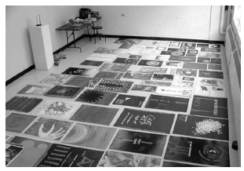 A collection of posters organized loosely on the floor at the Center
The Center for Advanced Visual Studies was established in 1967 by Gyorgy Kepes as a fellowship program for artists. Initiated with considerable institutional and financial support, the Center produced artworks, exhibitions and public programs often accompanied by a poster or publication. These posters in particular then provide an immediate condensed and visually legible accidental archive of its almost forty-year history.
While working my way through the contents of the closet, I was struck immediately by the surface qualities of this extraordinary set of posters. It was not simply the graphic design nor the typography that caught me - rather it was their mode of production. The design of the posters changed sporadically as new designers or administrators appeared, but what remains the same is the way in each self-consciously incorporates its production method into the design. For example, the poster at right revels in the extreme enlargement of a small sketch, photocopied large and produced on an offset press. The result is a tight and powerful synthesis of what is being said, how it is being said and how what is being said is produced. I assumed that many of these posters must have been designed by Muriel Cooper. I was already familiar with her work in broad outlines - I knew that she was the first Design Director at MIT Press where she designed Bauhaus, Learning from Las Vegas (first edition), File Under Architecture and the MIT Press logo; she established the Visible Language Workshop at the MIT Media Lab; and that she died unexpectedly in 1994 just after presenting breakthrough work in new computer interface design.
As it turns out, I was mostly wrong about the posters’ design - they were not designed by Muriel. Jacqueline Casey designed many of the early posters and later posters were made by Otto Peine and others. However, many or most of these posters were printed at the Visible Language Workshop, a teaching and production facility in the School of Architecture that Muriel cofounded with Ron MacNeil in 1975.
While poking around in the archive, I also learned that Muriel was briefly a fellow at the Center for Advanced Visual Studies. Her C.V. filed at the Center in 1974 lists Interests and Goals:
Concerned with use of mass production and its constraints and with extending experimental and educational experience into work relationships, reducing artificial human split. The significance of participatory and non-authoritarian communication forms in relation to specialization and professionalism. Structured / unstructured relationships in learning. Direct, responsive means of reproduction. [3]
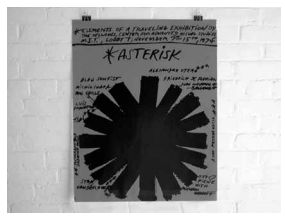 A poster printed at the Visible Language Workshop, 1974
10 AUGUST 2006
A SUB-BASEMENT AT THE MEDIA LAB
We proceed by visiting the MIT Media Lab, where Muriel Cooper spent the last years of her working life, from 1985–1994, continuing the work of the Visible Language Workshop. I’m here to meet Amber Fried-Jimenez, a current graduate student in the Physical Language Workshop run by John Maeda. Amber has procured a laserdisc for me which includes some of the last work of the VLW. With laserdisc in hand, we spend the next hour or so trolling various sub-basements of the Media Lab building searching for an analog laserdisc player capable of playing the 20-year-old media format.
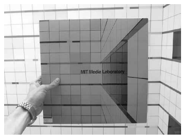 Holding the laserdisc and looking into the Media Lab atrium as pictured on its cover.
We enter more than one room containing stacks of outdated hardware, too difficult to repair, and rotting magnetic-tape formats whose chemical clocks are ticking. I am, of course, struck by the ways in which this recent past becomes so quickly inaccessible in a digital medium. In stark contrast to the piles of posters which provide a visceral record of the Center for Advanced Visual Studies, these dead media provide nothing tangible. As much of Muriel Cooper’s most important work was in a digital medium, I become more convinced that accounting for her work is crucial - now.
We eventually score a working analog laserdisc player and monitor. I press play and after some fussing with an arcane remote control, the disc begins. Muriel Cooper appears on screen dressed in a graphic black and white polka-dot pattern offset by casually rumpled gray hair and reading glasses hung from her neck on a chain. Her voice is immediately enthusiastic and engaged. I go next to meet Gloriana Davenport, a long-time friend and colleague of Muriel Cooper and currently the director of Media Fabrics group. She begins by giving me some initial background on Muriel’s working life.
On graduation from Massachusetts College of Art with a BFA in 1955, Muriel Cooper soon became involved in helping MIT develop a consistent visual language throughout its range of printed materials. MIT was heavily involved in government contracting after WWII and the volume of materials produced was significant. Beginning on a freelance basis, Muriel established the Office of Design Services, which she directed from 1954–1957. In the first American university design program, Muriel developed a house style which helped to make the technical language of much of the research produced at MIT legible for a wider audience.
This work would be continued by her friend and former classmate Jacqueline Casey for thirty years. Describing their time together as students at Massachusetts College of Art provides some clues to what comes after:
I have always been frustrated and intrigued by technology. Jackie Casey and I both went to Mass College of Art in the late 40s. We were cashiers in the school store; we both eventually became bookkeepers - first Jackie and then me. We learned more in the store than we did in the school. In a way, I think of the school store as a model for the VLW. When the store would close in the afternoon, the students who worked there - about a dozen of us - had a studio to ourselves, our own little bin of paints and papers and materials. [11]
In 1958, Muriel left MIT for Milan on a Fulbright scholarship to study exhibition design. Milan was then a lively center of contemporary ideas around product design, architecture and new kinds of interactivity. Returning to Boston, she established Muriel Cooper Media Design in 1959. In her private practice Muriel returned again to work with MIT, a client sympathetic to her concerns and which provided a natural platform for her work. She also began to work with the MIT Press, designing book covers and by 1964, Muriel Cooper had designed the MIT Press logo - an abstracted set of seven vertical bars that is a high-water mark in twentieth century graphic design.
11 August 2006
A CLIMATE-CONTROLLED ROOM SURROUNDED BY BOOKS ARRANGED IN CHRONOLOGICAL ORDER AT MIT PRESS
We continue on to the MIT Press Archive, a small, clean and climate-controlled room at the offices of the Press. Beginning to the left of the door and arranged in shelves circling the room clockwise sits every book that MIT Press has published arranged in chronological order. The overall effect is sublime - a committed reader might trace trajectories of thought in biology, economic theory, computer science or mathematics by circumnavigating the small room. So much thought, so little space - I was here to continue tracking the work of Muriel Cooper.
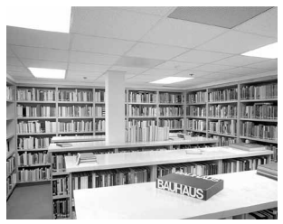 MIT Press Archive with Bauhaus designed by Muriel Cooper in front
Muriel Cooper became the first Design Director of MIT Press in 1967 and remained through 1974. Here she presided over the mass production of a series of titles in architecture, economics, biology, computer science and sociology that formed a critical discourse around systems, feedback loops and control. (This was of course initiated a number of years prior to her arrival with the MIT Press publication in 1948 of Norbert Weiner’s Cybernetics: or the Control and Communication in the Animal and the Machine.) Her position provided her a platform to investigate the conditions under which these books were produced.
At the Press, Muriel was able to directly engage the mechanics of mass production and this quickly became her primary concern. Because of the large number of titles published in one year and the relative slowness of their graphic production, she was not able to be meaningfully involved in the design of each book. Rather, she soon realized that efficient and responsive production systems had to be designed which would allow for the quantity of titles produced while maintaining a high level of design. She developed a rigorous classification and routing system for the design and production of books at MIT Press which identified and tracked projects along a streamlined process of design and production. By completely engaging the conditions of mass production and by designing systems to account for these, she produced a consistently high-standard of design across a very large number of titles produced at MIT Press during her tenure.
Often cited as the most successful design and production process of any university press, Muriel continually reevaluated how to make the conditions for making good design work possible. Her work was then equally engaged in the production schedules, budgets and conditions of production as it was in the typefaces, imagery, printing and binding.
As a consequence, Muriel Cooper was always searching for and implementing more responsive and iterative design and production processes at MIT Press. Frustrated by the delays that result from using specialized typesetting companies, Muriel invented an alternate production method. In the late 1960s, the standard method of preparing a typewritten manuscript for publication involved sending out the raw text to a typesetting bureau. Given precise specifications, the typesetter would return camera-ready type galleys a week or more later to be pasted down into a layout back at the Press. When there were corrections or copy edits, the type had to be returned to the typesetter to make adjustments and provide new galleys. Inevitably, the highly specialized labor of the typesetters was slow and therefore expensive. With the appearance of the IBM Selectric typewriter, Muriel imagined a more responsive design and production feedback loop.
For certain books in the late 1960s and early 1970s, MIT Press avoided typesetters entirely, bringing that role in-house using the new electric typewriters with which Muriel was already experimenting. When a type galley required a correction, it was now only a matter of retyping the corrected section and the change could be made in a few hours rather than a few days. The corresponding savings in time, labor and money changed the economics of publishing for books that could work in this alternate typesetting. A few of the better known examples of this work produced at the Press in this manner include Herbert Muschamp’s first book, File Under Architecture and Donis A. Dondis’ A Primer of Visual Literacy.
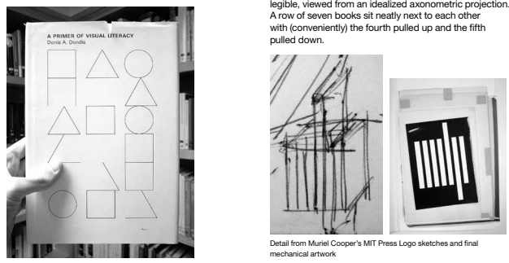 A Primer of Visual Literacy, first edition
These titles inevitably betray Muriel Cooper’s deep investment in synthesizing design with an intimate knowledge of production. File Under Architecture was produced entirely with the IBM Selectric typewriter, where quick and immediate typeface changes were as simple as replacing the typographic ball. Margins were set in multiple typefaces as a running commentary on the text itself. The book was printed on butcher’s paper and bound in corrugated cardboard. The result looks like the process that made it and reveals a deep engagement with and symbiotic relation between the design and production of the book.
A Primer of Visual Literacy was designed with Donis A. Dondis, a colleague and graphic design professor at Boston University. In Primer, all typesetting again was produced on an IBM Selectric Composer at the MIT Press. However, this time the result is not immediately recognizable as typewriting. The book was set in a crude proportionally-spaced version of Univers, a sans serif typeface designed by Adrian Friutiger (who had also designed the standard Courier letterforms.) The resulting book is a classic introductory graphic design textbook, produced today in its thirtieth printing. Many of its ideas mirror recurring concerns of Muriel Cooper in her work.
Perhaps the most visible mark that Muriel left at the MIT Press was the design of the publisher’s logo in 1964. In an early sketch for the logo, a shelf of books is clearly legible, viewed from an idealized axonometric projection. A row of seven books sit neatly next to each other with (conveniently) the fourth pulls up and the fifth pulled down.
The result is an abstracted form of the abbreviation “MITP” or MITPress. Flattening the mark to form a series of positive bars of equal width results in a clear barcode - as the products of mass production sit together in an orderly row, dematerialized into the pure information of a machine-readable graphic. This important piece of graphic design contains in it already an indication of the concerns that Muriel would follow in the following 30 years probing the limits of mass production and exploring the impact of digital information.
As a publisher’s mark, the MITPress logo is called a colophon. More generally, a colophon refers to the page of a book that details its production process - who typeset it, who printed it, when it was printed, what edition it is, library catalog references etc. It is a convenient coincidence that Muriel’s legacy at the Press is most clearly lodged in both of these colophons - on the spine in a highly formalized graphic and on the last page, where production details are tallied.
At MIT Press, there were yet some books in which Muriel would be personally and comprehensively involved as the designer. One prime example is Bauhaus: Weimar, Dessau, Berlin, Chicago by Hans Wingler published in 1968. Supported in part by an NEA grant and additional MIT Press funding, Muriel would spend most of two years designing and producing the book.
The “Bauhaus Bible“, as it’s widely known, contains the definitive collection of documents from the German art school through its multiple locations and bureaucratic arrangements. The book includes correspondence, descriptions of each workshop, budgets and photographs documenting the spaces of the school. Muriel described the subject matter of this book as a perfect fit, a coincidence of subject, designer and situation. The book design was given enough time to happen in a comprehensive manner and the stunning result reflects it. Muriel described the fortunate coincidence of subject matter and design brief:
My design approach always emphasized process over product, and what better place to express this than in a tome on the Bauhaus, the seminal exploration of art and design in an industrial revolution. [9]
Throughout the book design, production constraints were treated as design opportunities. The color plates had to be salvaged from a previous German publication for economic reasons. This determined the unusually large format of the book.
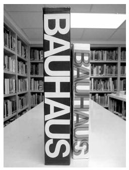 Bauhaus, hard and soft cover editions
When the original hardback and slip-cased edition was remade as a paperback, the spine transformed from a somber black and white all-caps Helvetica treatment to an explosion of offset-printed color as each printing plate (cyan, magenta, yellow) was shifted and printed one on top of each other. The overprinted spine is the product of thinking design through its production which is the hallmark of Muriel Cooper’s work.
On completing the book, Muriel Cooper made a sixteen millimeter film flipping through its pages to create a stop-frame animation. The book’s contents shift around the page, defining the grid that structures its design. The Bauhaus book film then became the after-image of her design process. It projected out from the hard physical form of the book to suggest a near-future when publishing would be as fluid as film, feedback immediate and users / makers would be all but indistinguishable. This constant interrogation of the near-future as a tangible present, as a practical lens for producing in the present powered a lot of Muriel’s best work.
When she finished the book in 1968, she was left with the ethical residue of the Bauhaus and a clearer idea about teaching, production, practice and the mutually dependent relationships between them. At the MIT Press, she had begun a small research unit where the experiments in IBM Selectric typesetting, computerized layout and other modes of book production were explored by designers, students and computer programmers. This proto-workshop that mixed practice, research and production convinced her that a more ambitious workshop within MIT might be possible.
A few years later, Muriel Cooper began to explore the possibility of establishing a similar workshop situation in the Department of Architecture at MIT. In the margins of a draft memo from Muriel to the Department Head proposing a visual communications center, a set of handwritten notes flushes out some of her goals for the nascent workshop:
- Media design and print design @ conceptual stage
- Educational pretext -- WORKSHOP
- Publishing
- Interdisciplinary? INSTITUTE / RESOURCES [5]
19 OCTOBER 2006
A Flat file called “Muriel” at the MIT Museum
Flat files at the MIT Museum Archives
The next stop is the MIT Museum Archives. It is just one floor down from the Center for Advanced Visual Studies in Building N51 and adjacent to one of Muriel Cooper’s former workspaces. Here I meet Gary Van Zante, Curator of Architecture and Design and Laura Knott, his assistant. Inside, just to the left of the door is a double-stacked flat file filled primarily with teaching documents simply labeled in sharpie and masking tape, “Muriel.”
By 1974, Muriel had partnered with designer, artist and technician Ron MacNeil to teach a new graphic design class at MIT School of Architecture called Messages and Means. Ron had come to MIT in 1966 as Minor White’s technical assistant while setting up the Creative Photography Program. He completed his degree in 1971 and apprenticed himself to the Architecture Machine Group established by Nicholas Negroponte to learn computer programming. In the next three years, Ron acquired and installed two single color sheet-fed offset printing presses at the School in an empty room with double-wide doors next to the photographic darkroom in Building 5 (Room 5-411). With overlapping interests and mutual friends, Muriel and Ron met and the idea to teach a design class together centering around these printing presses emerged.
Muriel had already been teaching at Massachusetts College of Art, but she was frustrated at how undergraduate design students froze when beginning an assignment. As soon as they were put into a situation of hands-on production such as using a photocopier or making monoprints, they became considerably more free. Muriel was convinced that a workshop environment, where teaching happens in a feedback loop with hands-on production and design would work well. Ron’s significant technical background in printing, photography and, increasingly, computer programming plus access to an offset printing press made this possible. Muriel described the goals of the Messages and Means course as:
... design and communications for print that integrated the reproduction tools as part of the thinking process and reduced the gap between process and product. [6]
Messages and Means students learned in a workshop environment how the printing press works by using it. Opening up access to this instrument, students were able to explore an intimate and immediate relationship to the means of production for their design work. The inevitable result was a merging of roles and blurring of specializations. In the workshop, students became editors, platemakers, printers, typesetters and designers all at one time, in overlapping and iterative configurations.
They used the offset printing press as an artist’s tool: they collaborated on platemaking and they altered the application of inks -- they rotated the paper to make printing an interactive medium. [9]
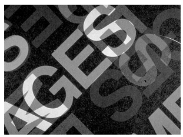 Detail from a Means and Messages class poster
In Messages and Means, Muriel and Ron introduced production-led assignments literally centered around the printing press that occupied most of the classroom. Students were asked not only to design their assignments, but also to work with the printer, darkroom and typesetting machines to produce their project. For example, students made “one-night prints“, skipping the traditional stages of design, paste-up and pre-press by working with presstype and photostatic cameras or exposing the printing plate directly. Students were independent, motivated and empowered to realize their projects as they wished. As a result, the course was consistently over-enrolled.
Students in the Visible Language Workshop, around 1976
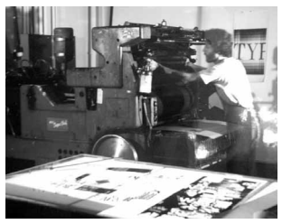 A student in the Visible Language Workshop, 1981
Messages and Means students constantly circulated between the offset printing press room and the adjacent photographic pre-press room. The trip required leaving one room, walking twenty feet down the hallway and entering the other only to arrive on the other side of a shared wall, five feet away. During the Independent Activities Period of January 1976, a group of (perhaps) over-zealous students took matters into their own hands to re-model this unfortunate architecture, demolishing a wall that stood between the two rooms. Literally tearing an unsanctioned hole through the middle of the MIT School of Architecture and Planning, the students fused these two spaces into one. The combined workshop mixed the inks, noise, paper and mess of offset printing with photographic enlargers, typesetting machines, chemicals and increasingly elaborate electronics and computer systems. In this space, the activities of designing, teaching and producing became increasingly indistinct. This was the Visible Language Workshop.
The Visible Language Workshop, a unique interdisciplinary graphics laboratory, was founded to explore verbal and visual communication as information and as art on both personal and public levels. The synthesis of concept and production processes is informed by tradition and technology. [6]
Ron MacNeil recalls that the Visible Language Workshop name came almost immediately on beginning the course. Together with Head of the Department of Photography, Jonathan Green and Head of the Department of Architecture, Donlyn Lyndon, the full name was set in 1974. The naming of the Visible Language Workshop was important - it connects explicitly to two trajectories, one past and one present through the terms “Visible Language” and “Workshop.” These combined to outline a set of interests that would follow the VLW through its twenty year course and three physical spaces. Calling the facility a “workshop” made an immediate correspondence to the workshops of the Bauhaus with which Muriel was particularly well-versed. Further, its legacy was alive in Cambridge with Bauhaus founder Walter Gropius now leading the Harvard Graduate School of Design. At the Bauhaus, all studies were rooted in the workshop, where design and production were integrated. Students enrolled in the school became contributing members of one workshop or another.
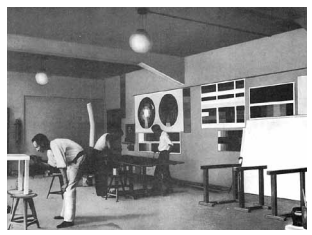 Wall-Painting Workshop at the Bauhaus, Dessau, 1927
For example, from 1925–1933 the Wall-Painting Workshop at the Bauhaus directed by Hinnerk Scheper produced experimental color schemes, paint techniques and environmental combinations. In the workshop, new technologies were developed, historical painting styles practiced, chemistries tested and new colors invented. Further, the students applied their learning directly to the school, painting the walls of the Bauhaus in any number of experimental schemes developed in the workshop. The ceilings of some rooms of the master’s houses were even painted black.
Fifty years later, the Visible Language Workshop continued this tradition in both name and spirit. The VLW pursued new forms of graphic communication by developing an intimate relationship to the tools of production in a workshop setting - offering an introduction to graphic design for graduate architecture students by providing direct access to printing presses, a darkroom, early computer typesetting and electronic paint programs. Like the Wall-Painting Workshop, the work of the VLW also practically permeated the School of Architecture - they designed, produced and printed the event and exhibition posters hanging on the School walls. “Workshop” described a space of production that was integral to the space of teaching and of design. By offering access to the tools of reproduction, students were able to understand the technical consequences of design decisions, immediately and the combined setting allowed for the creation of media in an increasingly direct, responsive, even interactive environment. If the Bauhaus workshops were an attempt to come to terms with the conditions of industrialized production, then the Visible Language Workshop was an attempt to confront informationalized production.
The shift from a mechanical to an information society demands new communication processes, new visual and verbal languages, and new relationships of education, practice and production. [6]
Calling the new center a workshop also had implications on its physical layout. Each of the three homes of the VLW physically emphasized fluid spaces, where hierarchies and relationships were immediately eroded. In Building 5, two rooms were joined and oversized machines forced an intense overlapping of function and practice. In Building N51, the workshop exploited a larger space to expand its activities to include exhibition as well as production and teaching. And at the Media Lab the VLW’s absence of cubicles and open plan reflected its teaching philosophy and provided a counter to the corporate-research-lab baroque of the rest of the building.
If “Workshop” connected the VLW to a rich heritage, then “Visible Language” connected it to a contemporary discourse. Visible Language was the name of a thennew journal published by Rhode Island School of Design and committed to the principle that reading and writing together form a new, autonomous language system. Founded in 1967 as The Journal of Typographical Research, the journal changed its name to Visible Language in 1970. Self-described as “The Journal for Research on the Visual Media of Language Expression“, Visible Language was at the center of an emerging discipline which mined all forms of visual writing.
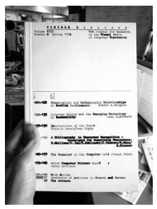 An issue of Visible Language photographed in the former VLW
Every issue of Visible Language was produced together with a guest editor. Visible Language XI 2 from Spring 1977 was guest-edited by Aaron Marcus and collected contributors across a range of disciplines. Contributions to this issue included graphic designer Dan Friedman’s visual writing exercises; author Herbert W. Franke writing about practical visual languages; computer programmer Ken Knowlton of Bell Laboratories on computerproduced grey scales; artists Richard Kostelanetz with a series of numerical poems whose syntax and semantics are mathematic, visual and verbal; Ian Hamilton Finlay with a concise concrete poem; and critic R.C. Kennedy exploring the diagrammatic languages of Marcel Duchamp. The journal’s broad scope and ambitious mission together with its specific engagement in technical and practical considerations made it close in spirit to what the Visible Language Workshop would become. In fact, the shelves in the last home of the Visible Language Workshop at the Media Lab are still filled with back issues.
As a name, the Visible Language Workshop was almost perfect - joining the legacy of the Bauhaus with the contemporary concerns of a graphic design practice in the midst of substantial change.
Muriel Cooper was appointed Associate Professor in the School of Architecture in 1981 and after seven years in Building 5, the VLW was offered a bigger space Building N51 with the Center for Advanced Visual Studies and Nicholas Negroponte’s Architecture Machine Group. Five years later, the VLW moved again into Building E15, the MIT Media Lab.
With the establishment of the MIT Media Lab in 1985, Nicholas Negroponte convinced Muriel to join as one of several principle research areas within the ambitious venture. Negroponte was insistent that the VLW take on a different name as the Media Lab was to be a place for developing new media, its new forms, new consequences and new possibilities. Muriel refused - the concerns of the VLW were precisely the same within the Media Lab as before, even as the context for their work was shifting from the printed page to the computer screen.
The final version of the VLW in the Media Lab was explicitly focused on developing new computer interfaces. Although from the beginning, computers and software were an integral part of the workshop.
A series of large-format Polaroid prints offers an immediate clue to the ways that computers were being used at the VLW throughout its history. With Polaroid Corporation literally around the corner from Building N51, the workshop had immediate access to a new way for making large and quick images. The VLW was given supplies of large-format Polaroid film (20 x 24“) and a primitive large-scale digital color printer cobbled together from a CRT monitor and photographic enlarger.
The catalyst for much of the early computer work at the VLW was a large-format printer designed by Ron MacNeil. Called The Airbrush Plotter, this printer could produce billboard-sized prints from digital files. Ron secured $50,000 from Outdoor Advertising Association of America in 1979 to build a prototype and it was already working six months later. After four years, the total project funding was around $500,000. (Computers were much more expensive then - Ron recalls spending $125,000 on a Perkin Elmer 32bit super mini computer!) This funding buoyed other pursuits as the VLW moved into a much larger facility in Building N51.
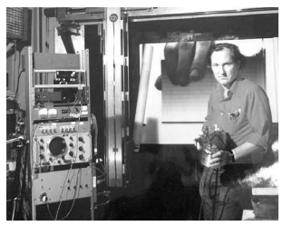 Ron MacNeil standing in front of The Airbrush Plotter at the VLW, 1981
Also by 1979, Ron MacNeil and graduate students Mark Abbate, Rob Faught, Mike Gerzso and Paul Trevithick were hard at work on a software platform for image and text manipulation. Called SYS, this proto-Photoshop program developed the functionality of large and expensive “Paintbox” programs in a more immediate manner. Workshop members began to use it, and the proximity of the users of SYS and the makers of SYS allowed for short cycles of refinement and development with powerful feedback loops.
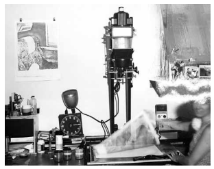 A student producing a large-format Polaroid print in the VLW, 1981
Cobbled together with help from students in Electrical Engineering and the Architecture Machine Group, SYS was a hard disk and a computer memory management scheme that yielded an image workspace of 8,000 x 2,000 pixels. SYS also included a single line scanner built to capture the high-resolution images needed for billboard-sized output on The Airbrush Plotter. Ron recalls, “it could take many minutes to scan an image and the subject had to stay completely still (sound like the early years of photography?)”
Building on previous digital printing experiments, the VLW developed a remote digital printing technique called SLOSCAN. However, it was more like an oscilloscope than a photograph - where the CRT printer instantly exposed an image on the screen to the paper, SLOSCAN slowly built up the image by scanning one line at time onto the photographic paper from an electronic file. The communication between machine and printer was necessarily slow, requiring a minimum of bandwidth. As a result, transmission of these images would be possible over long distances between a sending computer and receiving printer. SLOSCAN prints were transmitted from Boston to Sao Paolo, Vancouver, Tokyo and elsewhere.
What began as an experiment in digital printing had become a transmission medium, pointing the way forward to a very near future when digital images were no longer made for printing, but instead created for distribution through electronic networks.
As an MIT undergraduate UROP student in 1985, David Small constructed the first version of the SLOSCAN printer. Small eventually received three degrees from MIT and was a critical member of the Visible Language Workshop for ten years. David now runs a successful design firm.
7 February 2007
The storage closet of a small design firm on Massachusetts avenue
In a storefront on Massachusetts Avenue in Cambridge, halfway between the campuses of MIT and Harvard, is the office of Small Design Firm Inc. I have come to speak to David Small after hearing that he had a “closet full of Muriel Cooper things.” As a student, researcher and collaborator in the Visible Language Workshop, David contributed extensively to many of its most important projects. He began as an undergraduate in 1985, joining the VLW in 1987 and completing his PhD in 1999.
By 1985, the Visible Language Workshop had become one unit in the ambitious new Media Laboratory chaired by Nicholas Negroponte. Negroponte described the goals of the Media Lab in Design Quarterly 142, guest-edited by Muriel Cooper in 1989:
The Media Laboratory is a pioneering interdisciplinary center that is a response to the information revolution, much as the Bauhaus was a response to the industrial revolution. [2]
Where there was once only a single Perkin Elmer computer, there were now several Hewlett Packard workstations and even access to a supercomputer, the massively parallel Connection Machine 2. Still, Muriel insisted that the new space remain a workshop.
On moving into Building E15 in 1985, Muriel and Ron found a space which was considerably more corporate than their previous home in N51. E15, also known as The Jerome Wiesner building, was designed by I.M. Pei and looks much more like a suburban low-rise office (wrapped in a multi-colored ribbon by artist Kenneth Noland) than it does a university laboratory. Inside, relatively low drop-ceilngs, wall-to-wall carpeting, systems office furniture and an atrium lobby amplify the effect. Muriel insisted that the VLW would be organized differently. David Small remembers how the physical space mirrored Muriel’s teaching style:
She was a different kind of teacher: very reluctant to tell you what to do. Once you’ve started with the assumption that there’s no right or wrong way of doing anything, what becomes more important is getting students to think on their own. Muriel set up the right kind of environment for that: the space encourages interaction. [1]
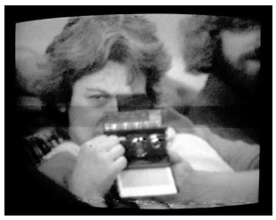 Muriel Cooper in a self-portrait with Polaroid SX-70, video imaged and printed at the Visible Language Workshop, 1977
The Visible Language Workshop at the Media Lab would eschew the low-lighting and cubicles of the other units, opting instead for an open-plan to house the ad-hoc collection of computers, typesetters and offset presses that had accumulated in the previous 11 years. Large power drops even hung from the conference room ceiling waiting to power the offset printing presses which never arrived. Already the concerns of the workshop were moving increasingly into software and communication patterns that remained completely within the architecture of the computer. Ron MacNeil recalls:
In time, images stay on the screen. And now they travel through networks. I think what Muriel finally discovered was the act of communication design in the process of radical change away from creating single artifacts to creating design processes that need to have a life of their own over these networks. [15]
Previous projects had begun to make it clear that electronic communications moving fluidly through networks of readers, writers, users and makers offered the communication space that Muriel had been trying to find for years. The workshop continued to explore the relationships between what gets said and how it gets said, but in their new home, the VLW left behind the printed page for the fluid space of the computer screen.
You’re not just talking about how the information appears on the screen, you’re talking about how it’s designed into the architecture of the machine, and of the language. You have different capabilities, different constraints and variables than you have in any other medium, and nobody even knows what they are yet.” [14]
The Visible Language Workshop began to design interfaces which offered routes, pathways or even selfguided tours through this soft architecture.
In the early days of MIT Press, designers had worked hard at understanding how to direct the viewer’s eyes in two dimensions: X and Y. The computer posed the challenge -- and offered the opportunity -- for the designer to create more complex pathways through multi-dimensional information. This had been the distant gleam in the eye of past workshops and it was realized here. [15]
The most successful of these interface experiments were the information landscapes presented in 1994 at the Technology Entertainment and Design (TED) conference organized by Richard Saul Wurman in Monterey, California. These information landscapes were immersive three-dimensional environments populated not by buildings but by information. The user’s mouse navigated through text organized in three dimensions, allowing complex, non-linear and multi-hierarchical spaces in which the user, rather than the designer controls the sequence and meaning of its contents.
I was convinced that the line between reproduction tools and design would blur when information became electronic and that the lines between designer and artist, author and designer, professional and amateur would also dissolve. [15]
In an information landscape, the user appears to fly effortlessly through the infinite zoom of a textual space, reading along the way, creating connections and making meaning. David Small recalls that the information landscapes were first imagined, appropriately enough, on an airplane with Muriel Cooper and Suguru Ishizaki returning from Tokyo. Nicholas Negroponte described this last and likely most radical interface design project of the Visible Language Workshop:
She has broken the flatland of overlapping opaque rectangles with the idea of a galactic universe. [13]
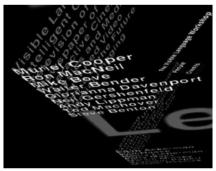 Screen from Information Landscapes, 1994
For the next three months after the TED conference, 68-year-old Muriel excitedly showed this new interface to sponsors, programmers, software companies and other designers. The day after returning from a presentation in Cambridge, England, Muriel Cooper died unexpectedly.
3 JULY 2007
a collection of boxes stacked too tall to reach IN The Muriel cooper archive at Massachusetts college of art
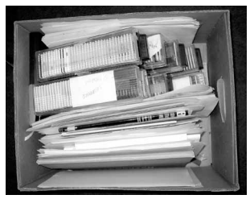 File box number MA16-2 from The Muriel Cooper Archive
Finally, we arrive where I probably should have begun - The Muriel Cooper Archive at Massachusetts College of Art. The small room at her alma-mater is stacked with banker’s boxes too tall to reach and a set of flat file drawers with oversized materials. Among the totally mixed contents of each box - file notes, sketches, slides, production schedules, mechanical artwork - I’m reminded that Muriel’s greatest asset may have been her refusal to specialize. She recognized that the discrete roles which industrialized production of the assembly line had delegated to its workers were beginning to dissolve. Desktop publishing softwares had opened up professional-level graphic production to a much wider audience, and designers were left with room to expand their practice.
Among these boxes, I found an original copy of the piece that Muriel Cooper and the Visible Language Workshop produced in 1980 for PLAN, the journal of the MIT Department of Architecture. When asked to submit an article about the Visible Language Workshop, Muriel responded instead with a 12-page visual essay produced together with students in the workshop, using the tools of the workshop. The first page of the article reproduces a letter that Muriel wrote to the editor describing the VLW’s submission. She lists a series of four numbered points that describe the goals of the visual article that follows, but she may as well be describing the forty years of her own practice:
July 15, 1980 [...]
- It would make use of the tools, processes and technologies of graphic arts media as directly as possible and the tools would be integrated with concept and product. Many of these are in the workshop. [...]
- The author would be the maker contrary to the specialization mode which makes the author of the content the author, the author of the form the designer, and the author of the craft the typographer / printer.
- Visual and verbal representation of ideas would be synthesized rather than separate.
- Time would remain as fluid and immediate as possible, leaving room for feedback and change. [7]
Muriel concludes the letter cordially, signing off with a promise:
This stands as a sketch for the future.